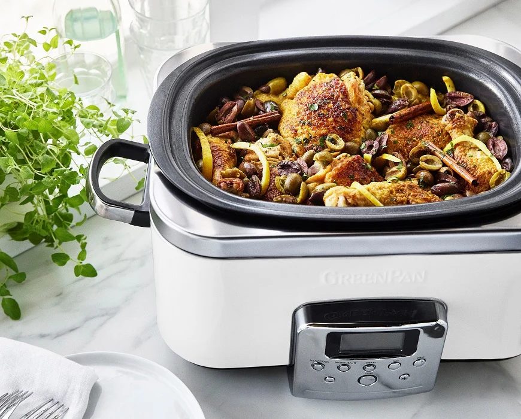

About Us
Professional Slow Cookers is a professional Slow Cooker manufacturing company. We pride outselves on exceptional build quality and outstanding customer service.
We are the #1 Slow Cooker business nationwide and have won the Best Slow Cooker Award for 10 years in a row!

We have an incredible lineup of many innovative products, Such as:
- SlowSavor
- SlowSavor Elite
- StewMaster 1000
- StewMaster 2000
- StewMaster 3000
- SimmerSense
- SimmerSense Plus
- SimmerSense Air
- SimmerSense Pro
- SimmerSense Pro Max
- SimmerSense ULTRA
Has your incredible piece of hardware spontaneously disabled one or more of its functions? Call us now for a 50/50 shot at a warranty acceptance at: 1-800-059-3000
Or try our personal number at 666-420-6969